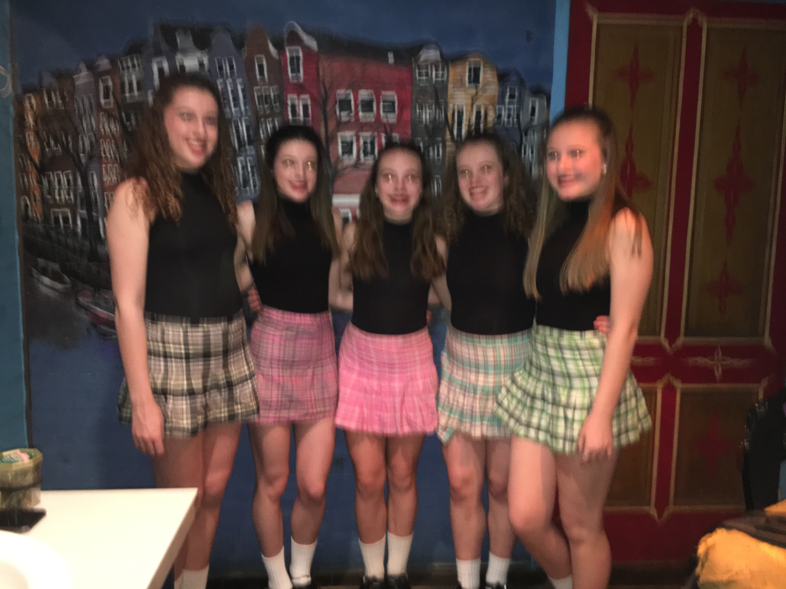
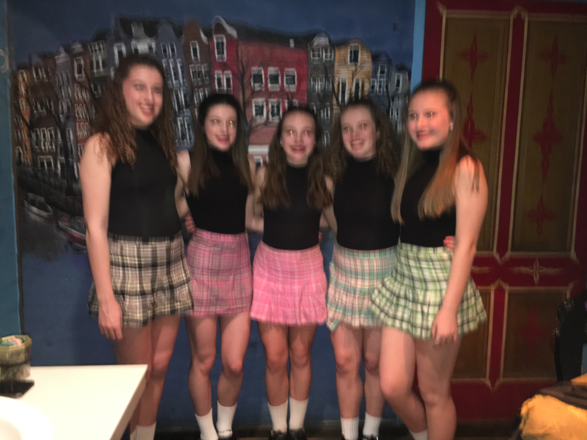

Click the button for a description of my interest.
I am an Irish dancer at the Trinity Academy of Irish Dance. We practice in Elmhusrt, a suburb close to Franklin Park. I go to the studio Mondays, Tuesdays, Thursdays and Sundays for 2 hours each to practice for our regional competition, the Oireachtas (pronounced O-ROCK-TIS). At Oireachtas this year, I will be doing two different competition. My solos, where I compete against 200 other girls and dance three different dances. Then, I do a team competition that we refer to as choreography. I dance on a team with 15 other girls and we all do the same piece and compete against other teams.
Irish dance is not just competitive. There is also a part that is mainly performance based. This summer, I travelled with a group of girls to Drummondville, Quebec to dance at a cultural festival. There was nothing competitive about it, it was just me and my friends getting to go do what we loved for fun. I loved Canada because at the festival, there were groups from 10 other countries. I became very close with girls and boys my age from France, Russia, Indonesia, and Japan!!
I also do dance outside of Trinity. Here at Lane, we have an Irish club. We learn a simple, traditional dance and then perform it at IDays and INights. It allows me to teach all my friends about something that I'm really good at that they might not know about. (See home page for a picture of Irish Club)
I have been dancing since I was three, and it has become one of the most important parts of my life. Most people think that it's just the girls with curly hair they see at the bar on St. Paddy's Day, but for me it means so much more. Dance is where I have met some of my best friends and met the people who have helped me become who I am today.
.jpg) 
